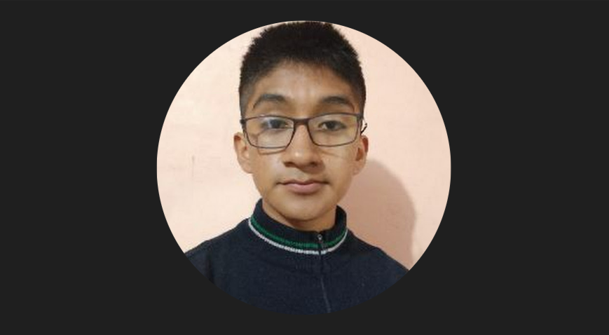
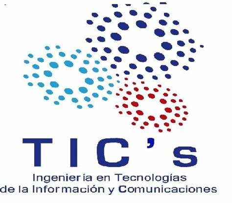

Mi nombre es Luis Antonio Serrano Garcia, soy estudiante del Instituto Tecnologico Superior del Occidente del Estado de Hidalgo, estudio la carrera de Ingenieria en Tecnologías de Información y Comunicaciones actualmente estoy cursando el tercer semestre, me considero una persona pasiente alegre y me encanta aprender de nuevas tecnologias.
Las TICs tienen el potencial de resolver problemas sociales importantes y mejorar la vida de las personas a través de la innovación tecnológica. El campo de las TICs está siempre en constante evolución, lo que significa que siempre hay algo nuevo que aprender y explorar, Las habilidades que adquieres al estudiar TICs son aplicables en una amplia gama de industrias. Esto puede abrirte muchas puertas en tu carrera profesional.
Soy originario de Huitexcalco de Morelos es una localidad en México, específicamente en el estado de Hidalgo, dentro del municipio de Chilcuautla , Se encuentra en la región del Valle del Mezquital, La localidad está situada a una altitud de 2065 metros y a una distancia aproximada de 9.73 kilómetros al suroeste de la cabecera municipal, Chilcuautla En cuanto a su demografía, Huitexcalco de Morelos tiene una población de 747 habitantes, de los cuales 357 son hombres y 390 son mujeres
A dia de hoy primeramete es obtener buanas calificaciones en la Universidad quiero usar los conocimientos que adquiera para resolver problemas complejos y hacer la vida más fáci, me interesa el apartado de ciberseguridad y el análisis de datos mi objetivo es convertirte en un experto en TICs y utilizar mis habilidades para hacer una diferencia en el mundo, mis planes a futuro despues de terminar la carrera es trabajar en una buena empresa despues hacer una maestria y posteriormente un doctorado primeramente me quiero especializar en el apartado de ciberseguridad

alunos de mispasatiempos es ver peliculas, dibujar o practicar algun deporte, pero lo que mas me gusta es tocar la guitarra usualmente paso horas afinando las cuerdas y practicando acordes, buscando la melodía perfecta. Me encanta explorar diferentes géneros musicales, un ejemplo seria el rock clásico. Cada rasgueo y punteo es un medio para expresarte, yo cada vez que la ocupo me alluda para desestresarme es un buen pasatiempo para distraerte o pasar el rato.